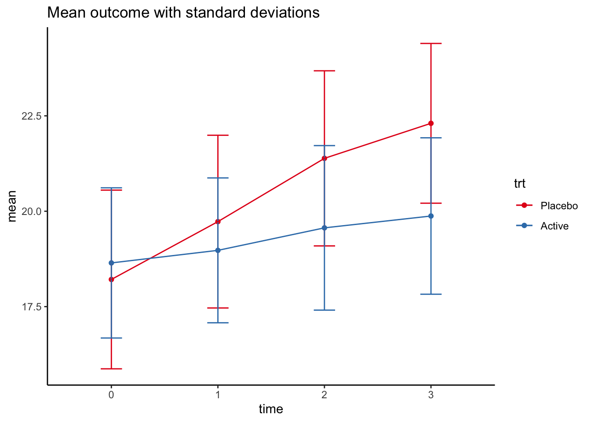

Chapter 2 Introduction
2.1 Trial Flow
The typical flow for an RCT should be something like:
Through hypothesis generating research, by clinical experience or sheer luck, a hypothesis has been developed.
The hypothesis indicates that an intervention treatment is either superior, non-inferior or equivalent to an existing treatment (the control).
A Population, the Intervention, the Control group and the Outcome measure (PICO) has been identified
A protocol has been written, detailing the background, research aim, the population, the intervention and control treatment, which assessments will be done when and how the data will be collected, how safety will be assessed, and the principles on how the data will be analysed.
All formal requirements has been met and the data capture method is set up. The first patient is included in the study.
About 3-6 months prior to database lock, the statistical analysis plan (SAP) and corresponding code should be started. Regardless of blinding, a separate randomisation list, not equal to the actual allocation list, should be used to avoid biased analysis decisions. The coding should result in a generated report to be discussed with the clinician.
When all data has been gathered and the database locked, the allocation list is opended, included in the code, and all code is run. The generated report should include all results required in the SAP.
The statistician should by the involvement be a co-author with all requirements.
The study is published.
2.2 Simulated dataset
To show the different analyses methods, we need to simulate an RCT. I use Stata to create the simulated dataset, mainly because it is easier to get data from Stata to R than the other way around.
We simulate a trial with repeated measurements for a continuous and a dichotomous endpoint in addition to a time to event endpoint. We include site as a strata in the randomisation (influencing the outcome), and an independent covariate which is highly predictive of the outcome.
*Setup the randomisation with strata and blocks
ralloc block bsize trt, nsubj(50) sav(stata/rct) ntreat(2) ratio(1) osize(2) init(4) seed(1914) strata(4)
*Clean up and add repeated time points
use stata/rct, clear
label drop _all
gen pid = _n
replace trt=trt-1
label def trt 0 "Placebo" 1 "Active"
label val trt trt
rename StratID site
drop block bsize Seq*
order pid site trt
sort pid
expand 4
sort pid
by pid: gen time=_n-1
*Simulate the normaly distributed continuous endpoints
*Generate the random intercept and residual
gen incept0 = rnormal(0,1) if time == 0
by pid: egen incept = max(incept0)
drop incept0
gen covar0 = round(rnormal(6,2),0.1) if time == 0
by pid: egen covar = max(covar0)
drop covar0
gen resid = rnormal(0,1)
*Set the mean by time and treatment
generate mean = cond(trt==0 & time==0, 4, cond(trt==0 & time==1, 5.5, cond(trt==0 & time==2, 7.2, cond(trt==0 & time==3, 8, cond(trt==1 & time==0, 4, cond(trt==1 & time==1, 4.4, cond(trt==1 & time==2, 5, cond(trt==1 & time==3, 5.5,.))))))))
*Set the mean by site and baseline covariate
gen site_mean = site/2 - 1.25
*Generate the outcome
gen contout = 10 + incept + mean + site_mean + covar + resid
replace contout = round(contout,0.1)
gen baseline0 = contout if time == 0
by pid: egen contbl = max(baseline0)
drop baseline0
*Simulate the categorical outcome by latent variable
gen catout = -10 + incept + mean + site_mean + covar + rlogistic() > 0
label def catout 0 "Negative" 1 "Positive"
label val catout catout
*Remove all observations with a positive categorical outcome at baseline to simulate a selection criteria
by pid: egen catoutbl = max(cond(time==0,catout,.))
drop if catoutbl==1
*Simulate a time to event outcome with a weibull distribution
gen timemean = 2 + incept + mean + site_mean + covar if time == 0
gen timeout0 = rweibull(1.5,timemean)
gen censor0 = rnormal(12,1) if time == 0
gen timecens0 = timeout < censor0 if time == 0
replace timeout = censor0 if timecens0 == 0
by pid: egen timeout = max(timeout0)
by pid: egen timecens = max(timecens0)
replace timeout = round(timeout,0.1)
label def cens 0 "Censored" 1 "Event"
label val timecens cens
*Clean up and name variables
drop incept mean resid site_mean timemean - timecens0 catoutbl
order pid - covar contbl
label var pid "Patient identifier"
label var site "Site"
label var trt "Treatment"
label var time "Time point2"
label var covar "Continuous baseline covariate"
label var contbl "Baseline value continuous outcome"
label var contout "Continuous outcome"
label var catout "Categorical outcome"
label var timeout "Time to event outcome"
label var timecens "Censoring/event identifier"
save stata/rct, replaceThe resulting dataset then looks like this (without the Stata variable names and labels):
| pid | site | trt | time | covar | contbl | contout | catout | timeout | timecens |
|---|---|---|---|---|---|---|---|---|---|
| 1 | 1 | Active | 0 | 6.8 | 20.2 | 20.2 | Negative | 9.5 | 1 |
| 1 | 1 | Active | 1 | 6.8 | 20.2 | 18.1 | Positive | 9.5 | 1 |
| 1 | 1 | Active | 2 | 6.8 | 20.2 | 19.4 | Positive | 9.5 | 1 |
| 1 | 1 | Active | 3 | 6.8 | 20.2 | 20.0 | Positive | 9.5 | 1 |
| 4 | 1 | Placebo | 0 | 7.9 | 20.0 | 20.0 | Negative | 4.6 | 1 |
| 4 | 1 | Placebo | 1 | 7.9 | 20.0 | 20.9 | Positive | 4.6 | 1 |
| 4 | 1 | Placebo | 2 | 7.9 | 20.0 | 23.5 | Positive | 4.6 | 1 |
| 4 | 1 | Placebo | 3 | 7.9 | 20.0 | 23.8 | Positive | 4.6 | 1 |
The data can be visualised like this:
rct %>%
group_by(trt,time) %>%
summarise(mean=mean(contout),sd=sd(contout)) %>%
ggplot(mapping=aes(x=time, y=mean, color=trt,group=trt,ymin = mean-sd, ymax=mean+sd)) +
geom_point() +
geom_errorbar(width=0.2) +
geom_line() +
theme_classic() +
ggtitle("Mean outcome with standard deviations") +
scale_colour_brewer(palette = "Set1")